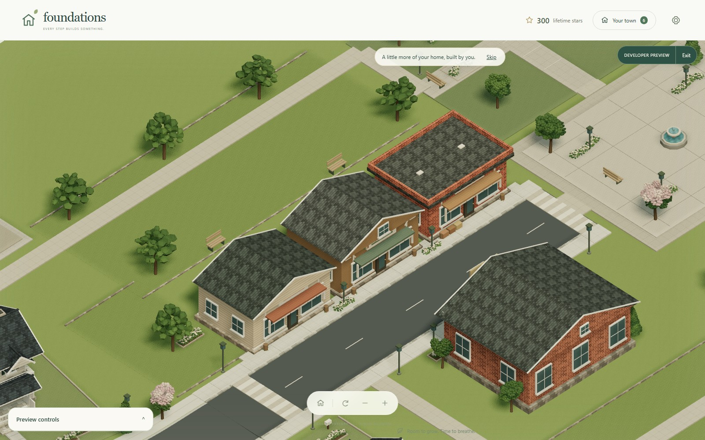
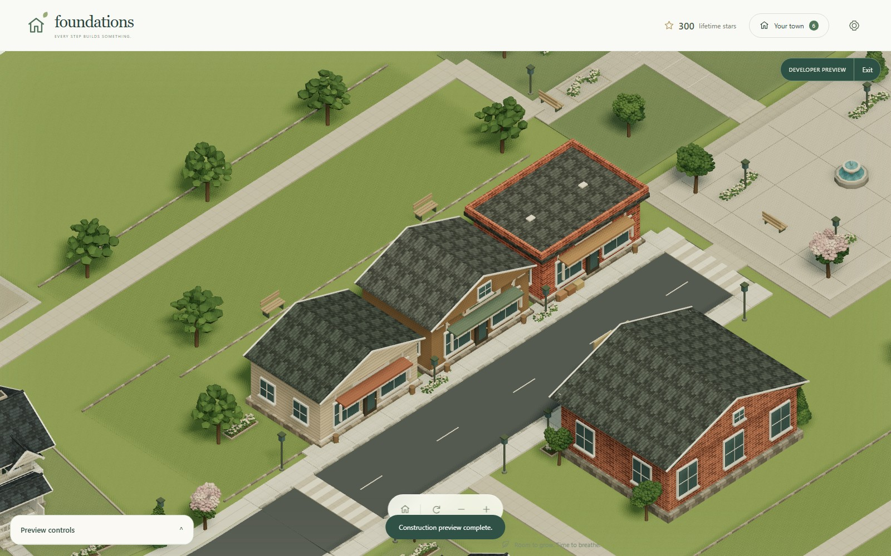
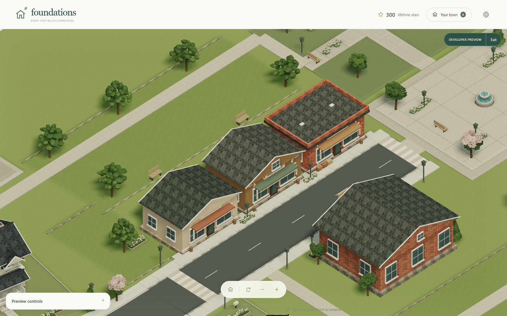
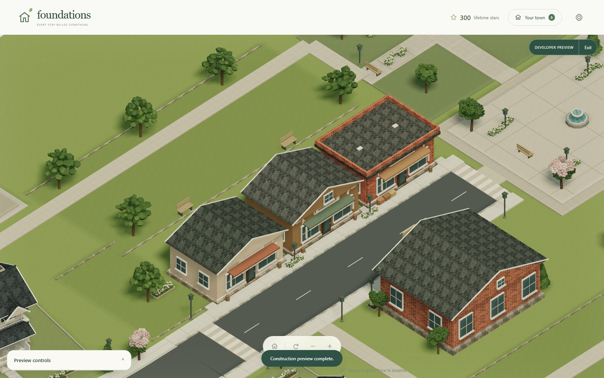
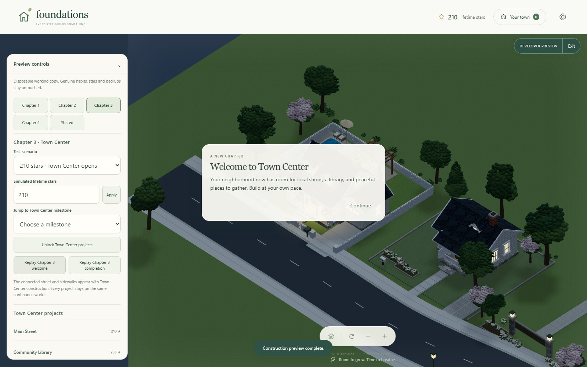

Urban cohesion comparison evidence
Source 42659f33b1572afe299aa1d1a6063b8ecd66c547. See metrics.json for renderer, viewport, and error diagnostics.
 city-normal: Chapter 3 only, fixed comparison camera, afternoon, reduced motion.
city-normal: Chapter 3 only, fixed comparison camera, afternoon, reduced motion. residential-transition: Chapter 3 only, fixed comparison camera, afternoon, reduced motion.
residential-transition: Chapter 3 only, fixed comparison camera, afternoon, reduced motion. main-street-gameplay: Chapter 3 only, fixed comparison camera, afternoon, reduced motion.
main-street-gameplay: Chapter 3 only, fixed comparison camera, afternoon, reduced motion. civic-greenway: Chapter 3 only, fixed comparison camera, afternoon, reduced motion.
civic-greenway: Chapter 3 only, fixed comparison camera, afternoon, reduced motion. city-overhead: Chapter 3 only, fixed overhead, afternoon.
city-overhead: Chapter 3 only, fixed overhead, afternoon. main-street-night: Same Main Street camera at night.
main-street-night: Same Main Street camera at night. neighborhood-station: Station-local comparison camera, same angle and zoom, afternoon.
neighborhood-station: Station-local comparison camera, same angle and zoom, afternoon. town-station: Station-local comparison camera, same angle and zoom, afternoon.
town-station: Station-local comparison camera, same angle and zoom, afternoon. full-rail-loop: Chapter 4 complete, fixed overhead, afternoon.
full-rail-loop: Chapter 4 complete, fixed overhead, afternoon. rail-city-normal: Chapter 4 complete, fixed normal camera, afternoon.
rail-city-normal: Chapter 4 complete, fixed normal camera, afternoon.
assembly-mid: Main Street at slow assembly speed before skip.
assembly-skipped: Completed Main Street after Skip.
assembly-complete: Main Street after normal-speed assembly.
assembly-reduced-motion: Completed Main Street with reduced motion.
chapter-transition: Existing chapter welcome over the recomposed town. mobile-portrait: Fixed gameplay comparison camera; emulated mobile viewport, afternoon, ambient motion enabled.
mobile-portrait: Fixed gameplay comparison camera; emulated mobile viewport, afternoon, ambient motion enabled. mobile-landscape: Fixed gameplay comparison camera; emulated mobile viewport, afternoon, ambient motion enabled.
mobile-landscape: Fixed gameplay comparison camera; emulated mobile viewport, afternoon, ambient motion enabled.